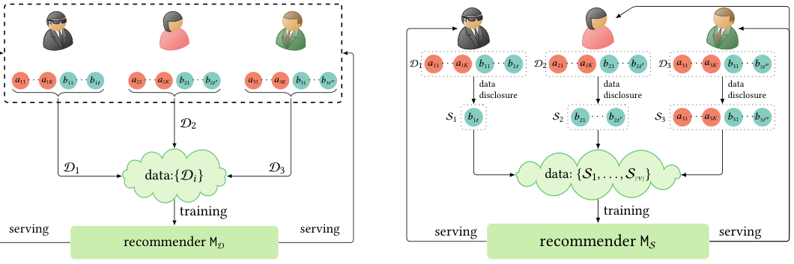

Studying the Impact of Data Disclosure Mechanism in Recommender Systems via Simulation (基于模拟的推荐系统数据披露机制影响研究)
- 会议/期刊: ACM TOIS (2022)
- 作者与机构: Ziqian Chen, Fei Sun (通讯), Yifan Tang, Haokun Chen, Jinyang Gao, Bolin Ding — 阿里巴巴达摩院 / 罗汉堂
- 推荐链路定位: 数据供给层（训练数据采集机制设计，而非排序模型本身）
- 研究方向: 去偏公平、可信隐私与工业架构 / 强化学习与动态探索推荐
- 论文原文: https://arxiv.org/abs/2204.00279v2
- 开源代码: 暂未开源（正文注明“评审后放出”，实际未检索到仓库）
TL;DR (1分钟核心速览)
针对 GDPR/CCPA 落地后平台普遍采用的“全有或全无”二元授权机制，本文提出隐私感知推荐框架：用户按隐私计算理论在“隐私成本 vs 推荐收益”间权衡，主动选择披露哪些隐式行为；平台则以机制 \(G=<\delta,\Pi>\)（切分规则 + 选择空间）约束可选动作。因真实上线代价高，作者用\(\epsilon\)-greedy 多智能体 bandit 模拟三类敏感度用户在 ML-100k/Yelp、GRU4Rec/BiSA/NCF 上的决策。结果显示细粒度切分 + 自由披露（separate,\(p=1/8\)）在 ML-100k 上 NDCG@100 达 20.21%，比“全披露”19.45% 更高，却只用了 46.46% 的行为数据。
Background & Motivation (背景与核心矛盾)
- 主流范式: 隐私保护推荐集中在“模型侧”，用联邦学习、差分隐私防止数据泄露；而合规侧只提供 opt-in/opt-out 的二元开关。
- 前人局限: ①二元机制下敏感用户直接退出，既得不到个性化服务，平台也永久损失这批用户的训练数据与收入；②联邦学习仍可被梯度反演、成员推断攻击，差分隐私则以精度下降为代价。
- 核心洞察 (Key Insight): 隐私文献反复指出“控制感 (control)”本身能显著降低用户隐私顾虑。若把控制粒度从“是否披露”细化到“披露哪一段”，用户可自行丢弃对推荐无用的数据，等价于让用户替平台做数据最小化。
- 本文切入点: 不做新隐私算法，而是把“数据披露机制”当作可设计变量，用模拟回答：机制如何影响用户决策？更好的模型能否换取更多数据？

Method (核心方法设计)
1. 整体框架 (Overall Architecture)
用户数据被拆为画像属性 \(D_{i,a}\)与行为序列\(D_{i,b}\)；平台机制\(G=<\delta,\Pi>\)先用切分规则\(\delta\)把原始数据重组为候选块，再以选择空间\(\Pi\)限定用户可提交的 0/1 组合。用户策略\(\pi_i\)在\(\Pi\)上做决策，产出披露数据\(S_i\)；所有用户的\(\{S_i\}\)聚合后从零重训推荐模型\(M_S\)，其排序结果回传为用户效用。由于用户间相互影响且无法通信，问题退化为部分可观测的多臂老虎机：每个 epoch 用户选动作、平台重训、奖励按效用减去隐私成本计算，直至策略收敛。
flowchart TD
A["原始数据 D_i: 画像属性 + 行为序列"] --> B["切分规则 δ: 百分比切分粒度 p"]
B --> C["候选块 δ(D_i)"]
C --> D["用户策略 π_i 在 Π 上选择 α_i"]
D --> E["披露数据 S_i = α_i ⊗ δ(D_i)"]
E --> F["聚合所有用户数据, 从零重训 M_S"]
F --> G["NDCG@100 效用回传"]
G --> H["奖励 R_i = -λ_i C_i + U_i, 更新 Q_i"]
H --> D2. 关键设计拆解 (Key Designs)
-
机制参数化 \(G=<\delta,\Pi>\)（把隐私策略变成可比较的设计变量）：痛点在于现实机制无法用统一语言描述，故用\(\delta\)统一“切多细”、用\(\Pi\)统一“能怎么选”。剖面上属性保持独立；行为按百分比粒度\(p\)切成\(1/p\)段，第\(j\)块为\(S_{i,bj}=\{b_{i,\lfloor 0.1t_i(j-1)\rfloor+1},\dots,b_{i,\lfloor 0.1t_ij\rfloor}\}\)。披露数据由动作与切分结果的聚合算子给出： $\(S_i=\alpha_i\otimes\delta(D_i)=\bigcup_{o_k=1,\,o_k\in\Pi_j} S_{i,k}\)$ 三种策略分别为 separate（\(2^{|\delta_b(D_i,b)|}\)种组合）、oldest/latest continuous（仅\(|\delta_b(D_i,b)|\) 种、“必须连续从最早或最晚开始”）。直觉：粒度决定“愿披露的人数”，策略决定“披露得是否精准”。
-
隐私计算目标与敏感权重标定（让 \(\lambda_i\) 可比、可复现）：用户目标直接取自隐私计算理论，隐私成本按披露比例线性计： $\(R_i(S_i)=-\lambda_i C_i(S_i)+U_i(S_i),\qquad C_i(S_i)=\frac{|S_{i,b}|}{|D_{i,b}|}\)$ 关键增量为 \(\lambda_i\)的标定式——用“全披露 vs 不披露”的效用/成本比锚定基准，再乘用户类型系数\(w_i\)： $\(\lambda_i=w_i\cdot\frac{U(D_i)-U(\varnothing)}{C(D_i)-C(\varnothing)}\)$ 这样 \(w_i=1\)恰好表示“维持原状即可接受”，\(w_i>1\) 为敏感型。物理直觉：把绝对隐私成本转化为相对“性价比”，使不同活跃度用户处在同一尺度上。
-
训练目标、模拟与推理开销：无监督损失，只用排序模型自身损失（BPR/CE + 16 负采样），核心是外层 MARL 循环：\(\alpha_i^{t+1}=\arg\max_{\alpha_i}Q_i^t(\alpha_i)\)（概率\(1-\epsilon\)），否则按逆访问计数采样\(\mathbb{P}_i^t(\alpha)=1/(N_i^{t-1}(\alpha)+1)\)归一化，\(Q\)以增量均值更新\(Q_i^t(\alpha)=Q_i^{t-1}(\alpha)+\frac{1}{N_i^t(\alpha)}(R_i^{t-1}-Q_i^{t-1}(\alpha))\)，\(\epsilon=0.5^{t/(3|\Pi|)}\)。代价明确：Assumption 2 要求每轮从零重训（或机器遗忘），\(|\Pi|\)大时收敛极慢（separate\(p=1/8\) 需 3000 轮 vs 常规 400 轮），故后续实验统一把选择数压到 ≤16。
Experimental Setup & Evaluation Protocol (实验设置与评估协议)
- 数据集与预处理: 评分/评论统一二值化为隐式反馈，按时间戳排序构造行为序列；过滤交互数 <40 的用户、交互数 <5 的物品，Yelp 再抽样至 8338 用户。
| 数据集 | #Users | #Items | #Interactions | 稀疏度/密度 | 特征/场景说明 |
|---|---|---|---|---|---|
| ML-100k | 637 | 1,278 | 90,554 | 11.12% | 含 4 个画像属性（性别/年龄/职业/邮编） |
| Yelp | 8,338 | 35,476 | 760,635 | 0.26% | 商家点评，极度稀疏、长序列 |
- 数据划分与防穿越 (Splitting Strategy):
Leave-One-Out——每人最后一个物品为测试；披露数据内部的最后一个交互作验证，其余训练。测试集固定，不随用户披露策略变化（Assumption 1 静态假设）。 - 排名评测协议 (Ranking Protocol): ML-100k 用无偏
Full-RankingNDCG@100（全物品集）；Yelp 因候选过大改用Sampled Ranking（1 正 : 1000 负），作者引用文献称与全库排序一致。 - 对比基线与超参设置: 基线不是某个 SOTA 模型，而是机制维度的对照：
all（全披露上界）、latest/oldest continuous、separate× 粒度 \(p\in\{1,1/2,1/4,1/8,1/16\}\)；模型侧对照 NCF（非序列弱模型）、GRU4Rec、BiSA（双向自注意力 SOTA）。统一\(d=128\)、dropout 0.2、负采样 16、Adam（BiSA 用\(3\times10^{-4}\)，其余\(10^{-3}\)）、早停；结果为最后 20 轮平均，未报告显著性检验。
Key Experimental Results (实验关键数据)
1. 主实验对比 (Main Results)
ML-100k、GRU4Rec、GRU 基准效用 \(U(D_i)\) 下的机制对比（“dis.%”为平均披露比例）：
| 机制 / 粒度 | NDCG@100 (all) | dis.% | NDCG (敏感用户) | Improv. (vs. \(p=1\)) |
|---|---|---|---|---|
| all（全披露，上界） | 19.45 | 100 | 17.46 | — |
| latest continuous \(p=1\)（“全有或全无”等价） | 11.30 | 43.37 | 6.72 | 基准 |
| latest continuous \(p=1/16\) | 16.31 | 40.45 | 12.01 | +44.3% |
| oldest continuous \(p=1/16\) | 17.33 | 46.89 | 12.88 | +53.4% |
| separate \(p=1/4\) | 16.36 | 44.12 | 9.44 | +44.8% |
| separate \(p=1/8\) | 20.21 | 46.46 | 14.93 | +78.9% |
| separate \(p=1/8\)（Yelp） | 23.23 | 48.34 | 13.97 | +69.6%（Yelp\(p=1\): 13.70） |
模型侧对照（Table 6，统一选择数 ≤16）：
| 策略 | NCF | GRU4Rec | BiSA |
|---|---|---|---|
| latest continuous \(p=1/16\) | 12.10 | 16.31 | 18.16 |
| oldest continuous \(p=1/16\) | 11.93 | 17.33 | 18.64 |
| separate \(p=1/4\) | 12.25 | 16.36 | 17.17 |
2. 消融实验 (Ablation Study)
用户群体构成的“消融”（ML-100k，NDCG@100 / 披露率%，Table 7）：
| 策略 | 100% 非敏感 | 100% 普通 | 100% 敏感 | 1:1:1 混合 |
|---|---|---|---|---|
| latest \(p=1/16\) | 19.45 / 100 | 16.64 / 15.7 | 10.50 / 11.7 | 16.31 / 71.0 |
| oldest \(p=1/16\) | 19.45 / 100 | 18.76 / 24.6 | 11.87 / 15.9 | 17.33 / 66.9 |
| separate \(p=1/4\) | 19.45 / 100 | 19.28 / 25.4 | 9.27 / 15.1 | 16.36 / 68.1 |
| —— 画像属性消融 —— | NCF 12.69→12.65, GRU 19.89→19.87, BiSA 19.90→20.06（带/不带画像属性） |
3. 关键实验发现 (Key Findings)
- “全有或全无”在所有策略、所有数据集上都是最差或接近最差：\(p=1\)时整体 NDCG 仅 11.30%，敏感用户只有 6.72%，远低于全披露上界 19.45%；而 separate\(p=1/8\) 只用 46.46% 的数据反而反超上界 +3.9%——用户主动丢弃噪声行为，起到了数据最小化的正则作用。
- 粒度收益主要来自“披露人数”而非“每人披露量”：细粒度使愿披露用户比例从 43.80%（\(p=1\)）升至 79.48%（separate\(p=1/8\)，ML-100k），而人均披露比例几乎不变（43.37% → 46.46%）。反之 latest\(p=1/16\)（40.45%）优于\(p=1/2\)（43.57%），说明“少而准”胜过“多而杂”。
- 模型变强能撬动敏感用户，但对普通用户出现边际效用递减：BiSA 相比 GRU4Rec 在三策略上把敏感用户 NDCG 从 12.01/12.88/9.44 提到 14.55/13.35/9.64；但 latest continuous 下 BiSA 并未让普通用户披露更多（15.61% vs 16.22%），因强序列模型本就不依赖早期行为。用户构成比机制影响更大：全敏感用户时 NDCG 仅 9–12%，远低于混合的 16–17%。
Highlights & Limitations (亮点、对比与审稿批判)
- 与代表作对比 (vs. Prior Work): 相较联邦学习/差分隐私类工作，本文不改进模型、不注入噪声，而是改“授权交互协议”，正交于加密/扰动路线；相较经济学与 HCI 的隐私问卷研究，本文首次把隐式反馈的细粒度披露纳入可计算的推荐闭环；相较文献 [78] 的“公开用户/私密用户”二分设定，本文将控制粒度细化到行为子序列并聚焦平台机制。
- 可迁移亮点: ①“机制 = 切分规则 × 选择空间”的二元参数化，可直接套用到任何需要用户授权的数据采集场景（如日志上报、埋点开关）；②\(\lambda_i\) 的相对标定式，把异质隐私偏好压缩成单一可调系数，便于做敏感性分析。
- 审稿级局限批判: ①模拟外推风险大：理性人 + 静态数据 + 周期性重训三项假设剥离了信任演化、决策疲劳与 UI 摩擦，真实用户未必能解出最优策略；②工程代价未量化：Assumption 2 要求每轮从零重训或机器遗忘，separate \(p=1/8\) 需 3000 轮且动作空间指数级，文中仅以“限制到 16 个选项”回避，缺乏延迟/成本的实测；③基线只有 NCF/GRU4Rec/BiSA 三个较老模型，缺少 SASRec/BERT4Rec 等更强的序列基线，且未做显著性检验；④Yelp 采用 1000 负采样，跨数据集数值可比性受限。
Rating (四维评分)
- 方法创新性 (Novelty): ⭐⭐⭐⭐ （问题新颖——把“隐私机制设计”而非“隐私算法”作为研究对象，隐私计算 + MARL 模拟的闭环首次用于隐式反馈细粒度披露）
- 评估协议与实验扎实度 (Protocol & Experiments): ⭐⭐⭐ （Leave-One-Out 与 Full-Ranking 规范，机制×模型×用户类型三维扫描较全，但纯模拟无真人/线上验证，且无显著性检验）
- 写作与数学规范度 (Clarity & Rigor): ⭐⭐⭐⭐ （\(G=<\delta,\Pi>\)、\(\lambda_i\) 标定式与 Q 更新写得干净，假设逐条显式声明；隐私成本的线性形式论证略依赖经济学文献而非实证）
- 工业落地与复现价值 (Industrial & Practical Value): ⭐⭐⭐ （“细粒度披露优于二元开关”对合规产品设计有直接指导价值，但未开源、且重训/遗忘开销与动作空间爆炸使即时落地困难）